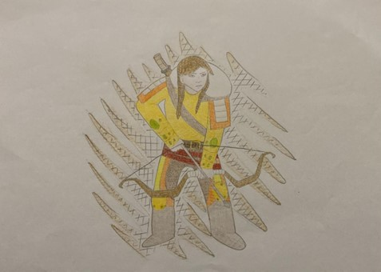

Ben sarı tonlu (elbiseli) Selcen Hatun… Trabzon tekfurunun sağa ve sola aynı anda iki yayla ok atabilen, attığı oku yere düşürmeyen savaşçı, yiğit kızıyım. Beni istemeye gelenler üç vahşi hayvanı (kağan aslan, kara buğra, kara boğa) öldürmek zorundaydı. Beni almaya gelen nice kâfir beyinin oğlu bu vahşi hayvanların elinde ölüp gitti. Tam da Kan Turalı’nın istediği bir kadındım. İyi bir savaşçı ve iyi bir silahşor idim. Bana Oğuz ülkesinden Kan Turalı da talip oldu. Silahsız bir şekilde üç vahşi hayvanı öldürerek beni almayı hak etti. Onu gördüğümde gönlüm onu sevdi. Kan Turalı ile birlikte Oğuz ülkesine dönerken bir yere konduk. Kan Turalı burada derin bir uykuya daldı. Bense beni isteyenlerin bizi takip edebileceklerini düşünerek atımın üstünde nöbet tuttum. Bir süre sonra beni verdiğine pişman olan babamın ardımızdan gönderdiği askerlerin yaklaşmakta olduğunu gördüm ve Kan Turalı’yı uyandırdım. İki koldan gelenleri karşıladık. Ben askerlerin kaçıp gittiklerini düşünerek konak yerine geri döndüm fakat Kan Turalı dönmemiş idi. Bunun üzerine tekrar harekete geçtim ve babamın gönderdiği askerlerin bir kısmının Kan Turalı’yı bir yerde sıkıştırdıklarını, göz kapağından yaraladıklarını, atını öldürdüklerini gördüm. Yetişip askerleri kovaladım. Kan Turalı gözkapağından yaralı olduğu için onu kurtaranın ben olduğumu önce anlamadı. Anlayınca da bu işe bozuldu. Oğuz ülkesinde bu olup bitenleri başkalarına anlatabileceğimden, kendisinin küçük düşürebileceğinden çekinerek beni öldürmek istedi. Ne kadar alttan alıp gönlünü hoş etmeye çalışsam da dinlemedi, beni ok atarak mücadele etmeye davet etti. İlk ok atma hakkını da bana verdi. Ben, kendisini öldürmek istemediğim için okumun temrenini çıkardım. Hedef alıp attığımda da okum başını sıyırıp geçti. Benim hiç de yabana atılmayacak birisi olduğumu anlayan Kan Turalı, koşturup yanıma gelerek belime sarıldı, beni sımak istediğini, öldürmeyi hiç düşünmediğini söyledi. Böylece bu krizi atlatmış olduk. Daha sonra bizi karşılamaya gelenlerle birlikte Oğuz ülkesine gittik. Orada büyük bir toy yaparak Kan Turalı ile evlendik.
